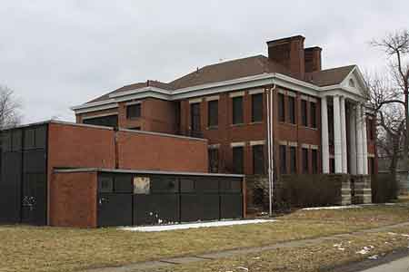

Ward-Thomas Museum


Garfield Elementary School
Ward — Thomas
Museum
Home of the Niles Historical Society
503 Brown Street Niles, Ohio 44446
Click here to become a Niles Historical Society Member or to renew your membership
Click on any photograph to view a larger image, click on image again to zoom into photograph.
| Garfield Elementary School. Built in 1905, Third Street School was located at 103 West Third Street and first housed 94 students. The Third Street Building, renamed Garfield School in 1920, was the oldest continuing school building until its closure in 2003. The building was sold in 2005 and was razed (2019). |
||
| |
||
The school was boarded up after being sold in 2005 and it was razed in 2019. |
 View of the cafeteria and gymnasium addition to Garfield Elementary School. |
|
| |
||
|
Postcard view of Third Street School, or Garfield School as it is now known. 1913. |
Canoe marooned
by flood in front of Third Street School(Garfield Elementary).
|
Classroom No. 4, West Third Street
School. |
|
|
||
|
|
||

{kind=link}
{kind=link}
{kind=link}
{kind=link}